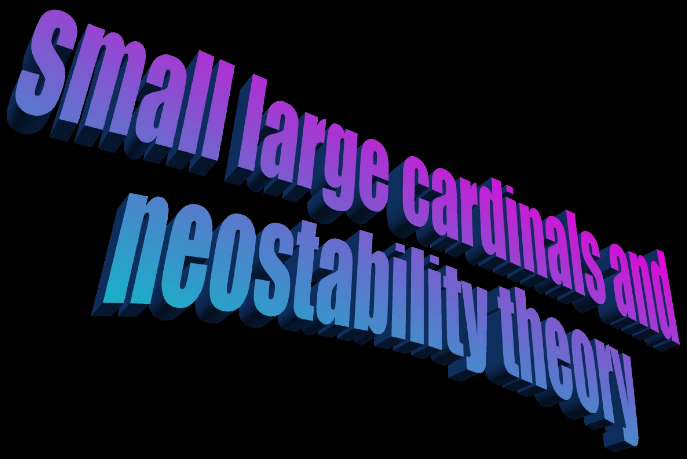
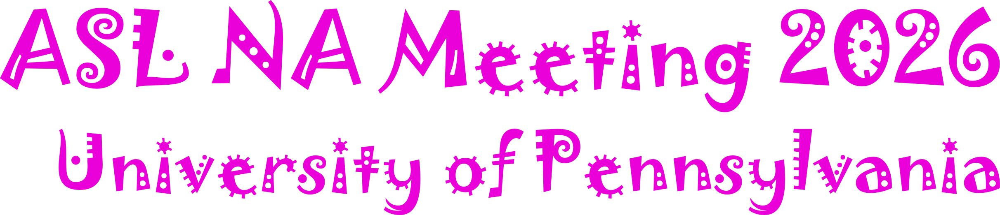
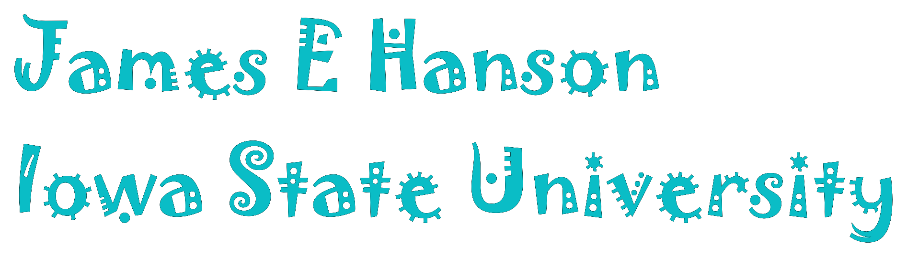
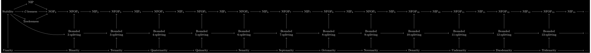
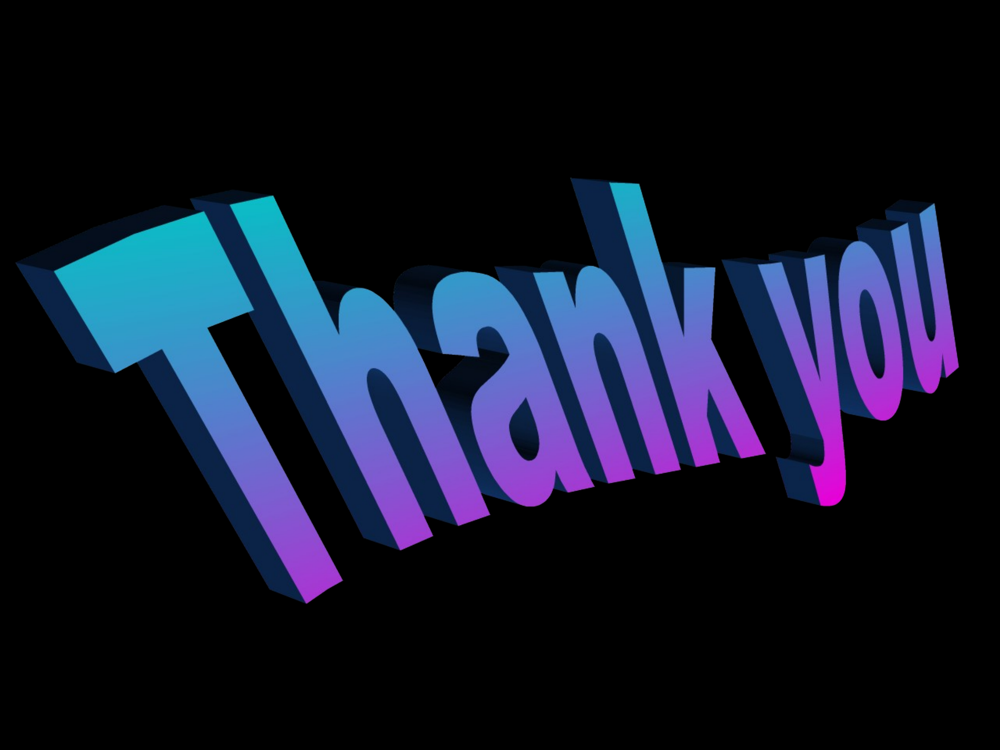

<!DOCTYPE html>
<html lang="en">
<head>
<meta charset="utf-8">
<title>Small, Large Cardinals and Neostability Theory</title>
<style>
* { margin: 0; padding: 0; box-sizing: border-box; }
html, body { width: 100%; height: 100%; background: #000; overflow: hidden; }
#viewer {
  position: fixed; inset: 0;
  display: flex; align-items: center; justify-content: center;
}
#viewer > img, #viewer > video {
  width: 100vw; height: 100vh;
  display: none;
  object-fit: contain;
}
#viewer > img.active, #viewer > video.active { display: block; }
.custom-slide {
  position: fixed; inset: 0;
  display: none;
  overflow: hidden;
  background: #000;
  color: #fff;
  font-family: Avenir, "Helvetica Neue", Helvetica, Arial, sans-serif;
}
.custom-slide.active { display: block; }
.title-slide {
  background: #000;
}
.title-slide.active {
  display: flex;
  align-items: center;
  justify-content: center;
}
/* A 4:3 stage letterboxed exactly like the object-fit:contain slide images
   (width/height mirror how the browser fits 4:3 content into the viewport).
   The three title PNGs are then positioned as percentages measured from the
   original title slide (slides/slide-01.png), so the layout matches the
   original and scales with the same frame as every other slide on any aspect
   ratio -- instead of drifting as a vw/vh mix would. */
.title-stage {
  position: relative;
  /* Fit the 4:3 stage to the viewport (shrinks on narrow screens), but never
     scale beyond the title art's native size -- 3957px-wide main-title art is
     99.5% of the stage, so the stage caps at ~3977x2983. */
  width: min(100vw, 133.333vh, 3977px);
  height: min(100vh, 75vw, 2983px);
}
.title-slide img {
  position: absolute;
  display: block;
  height: auto;
  max-width: none;
}
.title-slide .title-main   { left: 2%;    top: 8%;    width: 99.5%; }
.title-slide .title-event  { left: 42.17%; top: 3.96%; width: 53.57%; }
.title-slide .title-author { left: 3.62%; top: 78.07%; width: 47.32%; }
.forever-slide {
  background: linear-gradient(to bottom, #1b477f 60%, #15335f 60%);
}
.forever-slide h2 { display: none; }
/* SVG ground grid: viewBox 0..100 maps to vw (x) and vh (y) via non-uniform
   scaling, so coordinates match the pigeons' vw/vh positions exactly.
   All motion is JS-driven (real perspective reprojection per frame). */
.forever-slide svg {
  position: absolute; inset: 0;
  width: 100%; height: 100%;
  /* Fade the lines out where they crowd: near the horizon (the linear band,
     gone above 62%) AND near each vanishing point (the two radial blobs at
     -9.5vw/92vw on the horizon, where two-point perspective bunches the lines).
     mask-composite:intersect keeps a line only where ALL three say "show". */
  -webkit-mask-image:
    linear-gradient(to bottom, transparent 62%, #000 65%),
    radial-gradient(34vw 12vh at -9.5vw 60vh, transparent 30%, #000 80%),
    radial-gradient(34vw 12vh at 92vw 60vh, transparent 30%, #000 80%);
  -webkit-mask-composite: source-in, source-in;
  mask-image:
    linear-gradient(to bottom, transparent 62%, #000 65%),
    radial-gradient(34vw 12vh at -9.5vw 60vh, transparent 30%, #000 80%),
    radial-gradient(34vw 12vh at 92vw 60vh, transparent 30%, #000 80%);
  mask-composite: intersect;
}
.forever-slide .sun {
  position: absolute;
  left: 71%; top: 28%;
  width: min(27vw, 27vh); aspect-ratio: 1;
  transform: translate(-50%, -50%);
  border-radius: 50%; background: #ed00c8;
}
/* Each pigeon is a wrapper sized to the bird (JS sets left/top/width/height
   every frame). It holds the cutout image plus a haze-coloured silhouette whose
   opacity rises with distance: aerial perspective, so the bird dissolves INTO
   the haze colour rather than going transparent over the grid behind it. */
.forever-slide .pigeon {
  position: absolute;
}
.forever-slide .pigeon img {
  display: block;
  width: 100%; height: 100%;
}
/* Pre-coloured haze silhouette overlaid on the bird; JS fades its opacity in
   with distance. A plain , so no CSS-mask / file:// CORS issues. */
.forever-slide .pigeon-haze {
  position: absolute; inset: 0;
}
/* The frontmost pigeon draws above both the title overlay (z-index 4) and the
   footer/frame-number overlay (z-index 5) so its head clips over both. */
.forever-slide .pigeon.lead { z-index: 6; }
/* A cyan line at the horizon (standing in for the infinitely dense far grid
   lines), then a sustained glow that bridges -- at a steady brightness -- across
   the gap down to the masked, fading discrete lines, so there's no dim trough
   between the bunched lines and the horizon. Hard top stop at 60% keeps the
   horizon crisp. Above the grid, below the pigeons. */
.forever-slide .grid-fade {
  position: absolute; inset: 0;
  pointer-events: none;
  /* Horizon band (last layer) + a cyan blob at each vanishing point (first two
     layers) so the bunched lines that the mask removes near the VPs are filled
     in with matching cyan, evening out the brightness along the horizon. */
  background:
    radial-gradient(30vw 8vh at -9.5vw 61.5vh, rgba(0, 214, 239, 0.5), rgba(0, 214, 239, 0) 75%),
    radial-gradient(30vw 8vh at 92vw 61.5vh, rgba(0, 214, 239, 0.5), rgba(0, 214, 239, 0) 75%),
    linear-gradient(to bottom,
      rgba(0, 214, 239, 0) 60%,
      rgba(0, 214, 239, 0.65) 60%,
      rgba(0, 214, 239, 0.55) 60.7%,
      rgba(0, 214, 239, 0.55) 61.8%,
      rgba(0, 214, 239, 0.3) 62.8%,
      rgba(0, 214, 239, 0) 64%);
  /* Clip the whole veil to below the horizon so the VP blobs don't bleed into
     the sky -- keeps the horizon edge crisp. */
  -webkit-mask-image: linear-gradient(to bottom, transparent 60%, #000 60%);
  mask-image: linear-gradient(to bottom, transparent 60%, #000 60%);
}
.neostability-slide {
  background: #000;
  display: none;
}
.neostability-slide.active {
  display: flex;
  align-items: center;
  overflow: hidden;
}
.neostability-slide h2 {
  display: none;
}
.neostability-track {
  height: min(78vh, 46vw);
  min-width: 410vw;
  display: flex;
  align-items: center;
  /* Scroll position is driven by JS (hold-to-scrub, see makeScrubber): the track
     travels from translateX(40vw) to translateX(-340vw) -- the same span the
     old `zoo-slide` keyframes covered -- at the original 300s idle pace, and
     accelerates while the advance button is held. */
  transform: translateX(40vw);
  will-change: transform;
}
.neostability-track img {
  display: block;
  height: 100%;
  width: auto;
  max-width: none;
  object-fit: contain;
}
.thank-slide.active {
  display: flex;
  align-items: center;
  justify-content: center;
}
.thank-slide img {
  /* Show the whole image, shrinking to fit narrow screens, but never scaling
     beyond its native 2268x1701 (cap = current size). Replaces object-fit:cover,
     which cropped the sides on portrait/narrow screens. */
  max-width: min(100vw, 2268px);
  max-height: min(100vh, 1701px);
  width: auto;
  height: auto;
  display: block;
}
.title-overlay,
.footer-overlay {
  position: absolute;
  /* Center the 100vw x 100vh box the same way #viewer flex-centers regular
     slide images. Top-left anchoring (inset:0) drifts from the centered
     slides whenever 100vh != the real viewport height -- e.g. behind a
     mobile browser's dynamic URL bar -- shifting the title/number. */
  top: 50%;
  left: 50%;
  transform: translate(-50%, -50%);
  width: 100vw;
  height: 100vh;
  object-fit: contain;
  pointer-events: none;
}
.title-overlay {
  z-index: 4;
}
.footer-overlay {
  z-index: 5;
}
#counter {
  position: fixed; bottom: 20px; right: 24px;
  color: rgba(255,255,255,0.35);
  font: 16px/1 monospace;
  pointer-events: none;
  display: none;
}
</style>
</head>
<body>
<div id="viewer"></div>
<div id="counter"></div>
<script>
// Animated slides: { pageIndex: 'path/to/video.webm' }
const animations = {
  5:  'slides/0-indisc-seq-anim.webm',
  25: 'slides/cpt-morph-v4.webm',
  47: 'slides/k-splitting.webm',
  48: 'slides/4-k-end-homogeneity.webm',
};

// Animations that play once and hold their last frame (one-way morphs)
// rather than looping. The rest loop continuously.
const noLoopAnimations = new Set([25]);

const viewer = document.getElementById('viewer');
const counter = document.getElementById('counter');
const slides = [];
let current = -1;
let pendingShow = 0;

function createTitleSlide() {
  const el = document.createElement('section');
  el.className = 'custom-slide title-slide';
  el.innerHTML = `
    <div class="title-stage">
      
      
      
    </div>
  `;
  return el;
}

function createForeverSlide() {
  const el = document.createElement('section');
  el.className = 'custom-slide forever-slide';

  // ---- Pinhole camera: a real dolly shot --------------------------------
  // World: X right, Y up, Z into the screen. Camera at (c, 0, 0) looking +Z,
  // dollying sideways as c animates. Ground plane at Y = -GROUND.
  //   screen_x (vw) = 50 + F*(X - c)/Z
  //   screen_y (vh) = HORIZON - F*Y/Z
  // Vanishing points depend only on direction, not on c, so they stay FIXED.
  // A finite point shifts by F*dc/Z: near things move a lot, far things little,
  // the horizon (Z=inf) not at all -> genuine ground parallax. The grid and
  // the pigeons share this one projection, so the row of pigeons stays
  // parallel to its grid family throughout the move.
  const F = 50, GROUND = 10, HORIZON = 60;   // horizon low on screen (looking up)
  const C_START = 50, C_END = 0;                   // camera dollies left
  // (large C_START: the 3 nearest pigeons begin off-screen left and sweep in)

  // Two ground directions (two-point perspective). The pigeon row runs along
  // dirA, sharing dirA's vanishing point with that family of grid lines.
  const THA = 44 * Math.PI / 180;   // dirA family + pigeon row: VP near x=98vw
  const THB = 40 * Math.PI / 180;   // dirB family: VP near x=-10vw (unchanged)
  const dirA = { x: Math.sin(THA), z: Math.cos(THA) };
  const dirB = { x: Math.cos(THB), z: -Math.sin(THB) };

  const projX = (X, Z, c) => 50 + F * (X - c) / Z;
  const projYg = Z => HORIZON + F * GROUND / Z;        // ground point (Y=-GROUND)

  // Grid: precompute 3D ground segments once; reproject each frame. Each line
  // is a point P + direction d, drawn for the part with Z in [Z_NEAR, Z_FAR].
  // Lines are evenly spaced (SP apart) in 3D; they converge toward their VP
  // under projection (correct perspective). Z_FAR is far enough that every
  // line's far end piles up at the horizon, so the grid has no visible edge;
  // the line counts are generous (off-screen lines are clipped by the SVG).
  // Lines are drawn close to the horizon; the SVG is masked to fade them out
  // only over the last ~1vh (gone above ~49vh) where they'd otherwise alias. A
  // dimmer cyan line sits right at the horizon (drawn by the .grid-fade band),
  // with a faint glow bridging down to the fading lines. SP sets line spacing.
  const Z_NEAR = 2.5, Z_FAR = 520, SP = 5;
  const segs = [];
  function addLine(px, pz, d) {
    if (Math.abs(d.z) < 1e-6) return;
    let s0 = (Z_NEAR - pz) / d.z, s1 = (Z_FAR - pz) / d.z;
    if (s0 > s1) { const t = s0; s0 = s1; s1 = t; }
    segs.push({ x0: px + s0*d.x, z0: pz + s0*d.z, x1: px + s1*d.x, z1: pz + s1*d.z });
  }
  for (let b = -40; b <= 40; b++) addLine(b*SP*dirB.x, b*SP*dirB.z, dirA);  // rails
  for (let a = -10; a <= 80; a++) addLine(a*SP*dirA.x, a*SP*dirA.z, dirB);  // rungs

  // Pigeon image geometry: aspect (w/h) and the eye's fractional position from
  // the image's top-left corner (measured from the white eye in the cutout).
  // Each pigeon is anchored by its EYE at the projected column projX (a pure vw
  // value, independent of screen aspect), so the eye lands at the same vw on
  // ANY screen geometry. The image width in vw is derived per frame from the
  // LIVE viewport aspect ratio, so the body scales correctly when fullscreened.
  const IMG_ASPECT = 2367 / 2127, EYE_FX = 0.13, EYE_FY = 0.061;

  // Pigeons: equally spaced along dirA on the ground. i=0 is frontmost.
  // Z0 is small so the frontmost is a large closeup (~240vh tall); P_H/X0 are
  // tuned so its eye comes to rest high at ~(28.5vw, 18vh) in the title, with
  // the head clipping the text. The eye sits at ~28.5vw on every aspect ratio
  // (the title overlay stays centered, so this lands consistently there).
  // N is large so the line reads as endless: the distant pigeons bunch up by
  // perspective and fade to nothing (see FADE below) before the row runs out,
  // so there's no discernible last pigeon -- it just dissolves into the haze.
  // P_H is set so the closeup's eye still rests at ~18vh with the lower horizon;
  // because the VP dropped but the closeup didn't, the pigeon line slopes more.
  const N = 40, STEP = 16.8, P_H = 12.94, X0 = -1.10, Z0 = 2.559;
  // Atmospheric fade in two stages, keyed to distance Z (linear in pigeon index
  // so it spreads evenly down the line). Stage 1: crossfade each bird to the flat
  // haze silhouette (Z0..Z1). Stage 2: dissolve that flat shape's opacity to zero
  // (DZ0..DZ1) so it blends into whatever is actually behind it near the horizon
  // (dark ground / cyan band / sky) instead of popping as a solid colour.
  const FADE_Z0 = 45, FADE_Z1 = 260;
  const DISSOLVE_Z0 = 260, DISSOLVE_Z1 = 460;
  const birds = [];
  for (let i = 0; i < N; i++) {
    birds.push({ X: X0 + i*STEP*dirA.x, Z: Z0 + i*STEP*dirA.z });
  }

  el.innerHTML = `
    <svg viewBox="0 0 100 100" preserveAspectRatio="none" aria-hidden="true">
      <path fill="none" stroke="#00d6ef" stroke-width="0.13" stroke-opacity="1"></path>
    </svg>
    <div class="sun" aria-hidden="true"></div>
    <div class="grid-fade" aria-hidden="true"></div>
    
    
  `;
  const gridPath = el.querySelector('svg path');

  // Pigeon wrappers, inserted far-to-near so nearer ones paint on top. Each
  // holds the cutout image and a haze-colour silhouette (hazes[i]) faded in by
  // distance. They go before the overlays so the title/footer stay above them.
  const overlay = el.querySelector('.title-overlay');
  const wraps = [], hazes = [];
  for (let i = N - 1; i >= 0; i--) {
    const lo = i >= 2;                      // distant birds use the low-res assets
    const wrap = document.createElement('div');
    wrap.className = (i === 0 ? 'pigeon lead' : 'pigeon') + (lo ? ' lo' : '');
    const img = document.createElement('img');
    img.src = lo ? 'assets/pigeon-clipart-cutout-lo.png' : 'assets/pigeon-clipart-cutout.png';
    img.alt = '';
    const haze = document.createElement('img');     // pre-coloured silhouette overlay
    haze.className = 'pigeon-haze';
    haze.src = lo ? 'assets/pigeon-haze-lo.png' : 'assets/pigeon-haze.png';
    haze.alt = '';
    haze.style.opacity = '0';
    wrap.appendChild(img);
    wrap.appendChild(haze);
    el.insertBefore(wrap, overlay);
    wraps[i] = wrap;
    hazes[i] = haze;
  }

  let lastC = C_START;
  function render(c) {
    lastC = c;
    let d = '';
    for (const s of segs) {
      d += `M${projX(s.x0, s.z0, c).toFixed(2)},${projYg(s.z0).toFixed(2)}`
         + `L${projX(s.x1, s.z1, c).toFixed(2)},${projYg(s.z1).toFixed(2)}`;
    }
    gridPath.setAttribute('d', d);
    // Image width in vw = height(vh) * imgAspect * (vh/vw) = h * aspect / R,
    // where R = viewport width/height. Read live so it tracks any resize.
    const R = (window.innerWidth / window.innerHeight) || 1.7778;
    for (let i = 0; i < N; i++) {
      const { X, Z } = birds[i];
      const hVh = F * P_H / Z;                 // apparent height (vh)
      const wVw = hVh * IMG_ASPECT / R;        // matching width (vw), aspect-aware
      const wrap = wraps[i];
      wrap.style.height = hVh + 'vh';
      wrap.style.width = wVw + 'vw';
      // Anchor the EYE at projX so it lands at the same vw on every screen.
      wrap.style.left = (projX(X, Z, c) - EYE_FX * wVw) + 'vw';
      wrap.style.top = (projYg(Z) - hVh) + 'vh';  // feet on the ground point
      // Aerial perspective. Stage 1: crossfade toward the flat haze silhouette.
      const t = Math.min(1, Math.max(0, (Z - FADE_Z0) / (FADE_Z1 - FADE_Z0)));
      hazes[i].style.opacity = t * t * (3 - 2 * t);   // smoothstep
      // Stage 2: dissolve the flat shape away so it blends into the real backdrop.
      const dz = Math.min(1, Math.max(0, (Z - DISSOLVE_Z0) / (DISSOLVE_Z1 - DISSOLVE_Z0)));
      wrap.style.opacity = 1 - dz * dz * (3 - 2 * dz);
    }
  }

  // The dolly is a hold-to-scrub scene (see makeScrubber): progress p in [0,1]
  // drives the camera from C_START to C_END. Idle it drifts end-to-end in 18s
  // (1.83x the original 33s); holding advance accelerates it. Unlike the neo
  // slide it does NOT auto-advance: it hangs on the last shot (hangAtEnd) and a
  // further advance press moves to the next slide. show() runs
  // scrubStart/scrubStop on enter/leave.
  render(C_START);
  // Ease-out on the camera parameter: p (linear in time) is bent so the dolly
  // settles onto the last shot. Exponent 3 (cubic) gives a strong slow-down at
  // the end -- this matches the original animation's easing.
  const ease = p => 1 - Math.pow(1 - p, 3);
  makeScrubber(30, 18, p => render(C_START + (C_END - C_START) * ease(p)), true, ACCEL_P * 0.2);
  // Re-render on resize/fullscreen so the live aspect ratio is reapplied even
  // when no animation frame is running (idle at the start or end of the dolly).
  window.addEventListener('resize', () => render(lastC));

  return el;
}

// ---- Hold-to-scrub advance (shared by the forever & neostability slides) --
// These slides hold a single wide/animated scene. Instead of jumping straight
// to the next slide, the advance button (Right arrow / Space, or a
// press-and-hold pointer) scrubs the scene forward, ACCELERATING the longer
// it's held; when the scene reaches its end it advances to the next slide.
// Idle (not held) it drifts forward at that slide's original pace (baseDur
// seconds end-to-end). A scrubbable slide calls makeScrubber(index, baseDur,
// render) with render(p), p in [0,1] mapping start->end. show() calls
// scrubStart()/scrubStop() as the slide enters and leaves; the keydown/pointer
// handlers toggle the active scrubber's boost. ACCEL_P is tuned so a continuous
// hold from the start reaches the end in ~1.7s regardless of baseDur.
const ACCEL_P = 0.658;               // progress/s^2 added while held (ramps with hold time)
const scrubbers = {};                // slide index -> scrubber
let activeScrubber = null;
// A still-held advance key would auto-repeat and machine-gun through the slides
// after a scrub auto-advances. scrubLatched blocks advances until the key is
// released; advanceHeld tracks whether an advance key is currently physically
// down (so we only latch when a key was actually held, not on idle drift).
let scrubLatched = false, advanceHeld = false;

// hangAtEnd: instead of auto-advancing when the scene ends, hang on the last
// frame (s.hung) and wait for a fresh advance press (handled in keydown).
// accel: boost acceleration (progress/s^2) for the held keypress only; defaults
// to ACCEL_P. Raising it makes the hold ramp up faster without touching baseV
// (the idle drift / original animation pace).
function makeScrubber(index, baseDur, render, hangAtEnd, accel) {
  const s = { index, baseV: 1 / baseDur, render, hangAtEnd: !!hangAtEnd,
              accel: accel || ACCEL_P,
              p: 0, boost: false, hold: 0, hung: false, raf: 0, last: 0 };
  scrubbers[index] = s;
  return s;
}
function scrubStart(s) {
  s.p = 0; s.boost = false; s.hold = 0; s.hung = false;
  s.render(0);
  cancelAnimationFrame(s.raf);
  s.last = performance.now();
  s.raf = requestAnimationFrame(function frame(now) {
    const dt = Math.min(0.05, (now - s.last) / 1000);  // clamp so a stalled tab doesn't jump
    s.last = now;
    s.hold = s.boost ? s.hold + dt : 0;
    const v = s.baseV + (s.boost ? s.accel * s.hold : 0);
    s.p += v * dt;
    if (s.p >= 1) {                  // reached the end of the scene
      s.p = 1; s.render(1);
      s.raf = 0; s.boost = false; s.hold = 0;
      // A still-held advance key must be released before it advances again:
      // for hangAtEnd this keeps the held key from jumping off the last frame;
      // otherwise it stops the auto-advance from machine-gunning onward.
      scrubLatched = advanceHeld;
      if (s.hangAtEnd) s.hung = true;   // hang on the last shot; wait for a press
      else show(current + 1);           // advance straight to the next slide
      return;
    }
    s.render(s.p);
    s.raf = requestAnimationFrame(frame);
  });
  activeScrubber = s;
}
function scrubStop(s) {
  cancelAnimationFrame(s.raf); s.raf = 0;
  s.boost = false; s.hold = 0;
  if (activeScrubber === s) activeScrubber = null;
}

function createNeostabilitySlide() {
  const el = document.createElement('section');
  el.className = 'custom-slide neostability-slide';
  el.innerHTML = `
    <div class="neostability-track">
      
    </div>
    
    
  `;
  // Scrub the wide diagram sideways; idle drift covers it in the original 300s.
  const track = el.querySelector('.neostability-track');
  const START_X = 40, END_X = -340;   // vw, matches the old zoo-slide span
  makeScrubber(46, 300, p => {
    track.style.transform = `translateX(${(START_X + (END_X - START_X) * p).toFixed(3)}vw)`;
  });
  return el;
}

function createThankSlide() {
  const el = document.createElement('section');
  el.className = 'custom-slide thank-slide';
  el.innerHTML = ``;
  return el;
}

function createDefaultSlide(i, index) {
  if (animations[index] !== undefined) {
    const el = document.createElement('video');
    el.src = animations[index];
    el.loop = !noLoopAnimations.has(index);
    el.muted = true;
    el.playsInline = true;
    el.preload = 'auto';
    return el;
  }

  const n = String(i).padStart(2, '0');
  const el = document.createElement('img');
  el.src = `slides/slide-${n}.png`;
  el.alt = `Slide ${i}`;
  el.loading = 'eager';
  el.decoding = 'async';
  return el;
}

function createSlide(i) {
  const index = i - 1;
  if (index === 0) return createTitleSlide();
  if (index === 30) return createForeverSlide();
  if (index === 46) return createNeostabilitySlide();
  if (index === 53) return createThankSlide();
  return createDefaultSlide(i, index);
}

for (let i = 1; i <= 54; i++) {
  const index = i - 1;
  const el = createSlide(i);

  el.dataset.index = index;
  viewer.appendChild(el);
  slides.push(el);
}

// Resolve when the media is ready, but NEVER hang: also resolve on `error` or
// after a timeout. Otherwise a slide whose video can't load or decode (e.g. an
// unsupported codec on a phone) blocks navigation and you get stuck on it --
// swiping past does nothing because `show()` is still awaiting that media.
function settleWhenReady(el, readyEvent) {
  return new Promise(resolve => {
    let done = false;
    const finish = () => { if (done) return; done = true; clearTimeout(timer); resolve(); };
    el.addEventListener(readyEvent, finish, { once: true });
    el.addEventListener('error', finish, { once: true });
    const timer = setTimeout(finish, 4000);  // fail-open backstop
  });
}

// Warm a slide's media ahead of time so navigating to it paints instantly
// instead of flashing. Decoding a display:none  still populates the
// browser's decode cache, so the later display:block paint has nothing left to
// decode; videos buffer their first frame so they don't show a blank frame.
// Idempotent and fire-and-forget: safe to call on every navigation.
function prefetch(idx) {
  if (idx < 0 || idx >= slides.length) return;
  const warm = m => {
    if (m.tagName === 'IMG') {
      if (!(m.complete && m.naturalWidth > 0) || !m.dataset.decoded) {
        m.decode?.().then(() => { m.dataset.decoded = '1'; }).catch(() => {});
      }
    } else if (m.tagName === 'VIDEO') {
      if (m.preload !== 'auto') m.preload = 'auto';
      if (m.readyState < HTMLMediaElement.HAVE_CURRENT_DATA) m.load();
    }
  };
  const el = slides[idx];
  if (el.tagName === 'IMG' || el.tagName === 'VIDEO') warm(el);
  else el.querySelectorAll?.('img, video').forEach(warm);
}

function readyToShow(el) {
  if (el.tagName === 'IMG') {
    if (el.complete && el.naturalWidth > 0) return Promise.resolve();
    if (el.decode) return el.decode().catch(() => undefined);
    return settleWhenReady(el, 'load');
  }

  if (el.readyState >= HTMLMediaElement.HAVE_CURRENT_DATA) {
    return Promise.resolve();
  }

  if (el.classList.contains('custom-slide')) {
    const media = [...el.querySelectorAll('img, video')];
    return Promise.all(media.map(readyToShow));
  }

  el.load();
  return settleWhenReady(el, 'canplay');
}

async function show(idx) {
  if (idx < 0) idx = 0;
  if (idx >= slides.length) idx = slides.length - 1;
  if (idx === current) return;

  const next = slides[idx];
  const showToken = ++pendingShow;
  await readyToShow(next);
  if (showToken !== pendingShow) return;

  if (current >= 0) {
    const previous = slides[current];
    previous.classList.remove('active');
    if (previous.tagName === 'VIDEO') previous.pause();
    previous.querySelectorAll?.('video').forEach(v => v.pause());
    if (scrubbers[current]) scrubStop(scrubbers[current]);
  }

  current = idx;
  next.classList.add('active');
  if (next.tagName === 'VIDEO') {
    next.currentTime = 0;
    next.play().catch(() => undefined);
  }
  next.querySelectorAll?.('video').forEach(v => {
    v.currentTime = 0;
    v.play().catch(() => undefined);
  });
  if (scrubbers[idx]) scrubStart(scrubbers[idx]);

  counter.textContent = `${current + 1} / ${slides.length}`;
  // Reflect the current slide in the URL hash (1-based) so a refresh or a
  // shared link reopens on the same slide.
  const hash = `#${current + 1}`;
  if (location.hash !== hash) history.replaceState(null, '', hash);

  // Warm the neighbours so the next swipe/keypress paints with no flicker.
  // Look ahead two (forward is the common direction) and one back. Deferred to
  // idle time so it never competes with showing the current slide.
  const warmNeighbours = () => { prefetch(idx + 1); prefetch(idx + 2); prefetch(idx - 1); };
  (window.requestIdleCallback || window.requestAnimationFrame)(warmNeighbours);
}

// Read a 1-based slide number from the URL hash; default to slide 1.
function slideFromHash() {
  const n = parseInt(location.hash.slice(1), 10);
  return Number.isFinite(n) ? n - 1 : 0;
}

document.addEventListener('keydown', e => {
  // Space (and Shift+Space) advance/retreat like the arrow keys, matching how
  // a presentation remote / PgDn behaves. preventDefault stops Space from also
  // scrolling the page.
  const advance = e.key === 'ArrowRight' || (e.key === ' ' && !e.shiftKey);
  const retreat = e.key === 'ArrowLeft'  || (e.key === ' ' && e.shiftKey);
  if (advance) {
    e.preventDefault();
    advanceHeld = true;
    // After a scrub auto-advances, ignore the still-held key's auto-repeat until
    // it's released and pressed again (scrubLatched is set in scrubStart).
    if (scrubLatched) return;
    // On a scrubbable slide, holding advance scrubs the scene and only jumps to
    // the next slide once it reaches the end; elsewhere it advances at once. A
    // scene that hangs on its last frame advances on the next fresh press.
    if (activeScrubber) {
      if (activeScrubber.hung) show(current + 1);
      else activeScrubber.boost = true;
    } else show(current + 1);
  }
  if (retreat) { e.preventDefault(); show(current - 1); }
});
document.addEventListener('keyup', e => {
  if (e.key === 'ArrowRight' || e.key === ' ') {
    advanceHeld = false; scrubLatched = false;
    if (activeScrubber) activeScrubber.boost = false;
  }
});

// Press-and-hold with a mouse or finger also scrubs the active scene.
viewer.addEventListener('pointerdown', () => { if (activeScrubber) activeScrubber.boost = true; });
const scrubReleasePointer = () => { if (activeScrubber) activeScrubber.boost = false; };
viewer.addEventListener('pointerup', scrubReleasePointer);
viewer.addEventListener('pointercancel', scrubReleasePointer);
viewer.addEventListener('pointerleave', scrubReleasePointer);

// Touch: horizontal swipe. Swipe left = next, swipe right = previous.
let touchX = 0, touchY = 0;
viewer.addEventListener('touchstart', e => {
  touchX = e.changedTouches[0].clientX;
  touchY = e.changedTouches[0].clientY;
}, { passive: true });
viewer.addEventListener('touchend', e => {
  const dx = e.changedTouches[0].clientX - touchX;
  const dy = e.changedTouches[0].clientY - touchY;
  if (Math.abs(dx) > 40 && Math.abs(dx) > Math.abs(dy)) {
    show(dx < 0 ? current + 1 : current - 1);
  }
}, { passive: true });

// Respond to manual hash edits and browser back/forward navigation.
window.addEventListener('hashchange', () => {
  const idx = slideFromHash();
  if (idx !== current) show(idx);
});

show(slideFromHash());
</script>
</body>
</html>
